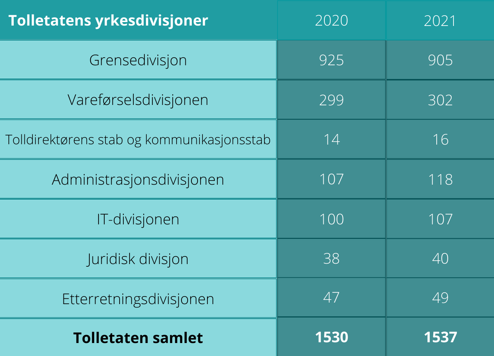

Styrkje det strategiske og operative samarbeidet mellom tollvesen, grensemyndigheiter og lokalt politi i grenseområda og styrkje tollvesenets operative bemanning.
Skal vi tro medieoppslag om at ansatte i tollvesenet slutter, og det er for få tollere i Norge nå, taler det mot at punktet i Hurdalsplattformen ikke gjennomføres som det blir lovet. Vi har tatt en prat med en som står midt i det, på Norges største grenseovergang.
Kine Steen, tollinspektør på Svinesund.
Steen startet som toller på Svinesund i 2010. Hun jobber både ute og inne med varierte arbeidsoppgaver. Inne går det mest i å ta imot og behandle transportdokumenter av varer som skal inn og ut av landet. Ute kontrollerer hun biler og lastebiler, kjører blålys og spaner.
Kine Steen. Foto: Tolletaten
Ingen begrensninger
Da vi spurte henne om det er et beslag hun husker spesielt godt var hun rask med å fortelle at det var kontroll av en buss. Det var en veldig nervøs person med på bussen. Han hadde lite bagasje og ingen penger. Han skulle til Norge på ferie.
- Lite troverdig story.
Kine Steen
Etter mange timer kontroll, innrømmet han at han hadde svelget. Han hadde nesten en kilo hasj i magen.
- Det er ingen begrensning på hvor kurererne gjemmer ting.
Kine Steen
De kan ha det innvendig og utenpå kroppen, steder i bilen som i tanken eller i skjulte rom, sier Steen.
Alt smugles
Det vanligste folk smugler er ifølge Steen tobakk og alkohol. Hun nevner også narkotika i stor grad samt våpen og penger.
Det smugles fra alle land. Steen opplever at det er mye bra beslag fra øst europeiske land. Hun nevner Drawsko Pormoskie i Polen som det har vært smuglet vanvittig mye alkohol fra. Ellers er det også mye hasj fra Nederland. Steen mener samtidig at det ikke er noe fasit om hva slags varer som kommer fra hvilket land.
Smugling under koronapandemien
Steen sier at de merket stor forskjell på biltrafikken under koronapandemien. Men selv om bilgrensene var stengt smuglet de bare på en annen måte. Varene skal inn, samme hvordan det gjøres. Når de ikke kunne kjøre det inn på grunn av stengte grenser, fant de andre måter. Steen nevner blant annet fly, båt og drone. De har også stoppet crossere gjennom skogen.
- Mange varianter og mye kreativt.
Kine Steen
Kreative løsninger
Gjennom 12 år som tollinspektør har Steen kontrollert en hel del biler, som er fylt opp med mye varer som har vært forsøkt skjult. Det er mye biler som er konstruert for at nettopp tollerne ikke skal finne det som er gjemt. Bensin og diesel tanker som ikke nødvendigvis er fylt med drivstoff. Det lages luker og hemmelige rom med koder som åpner disse.
- Ingen vanlige folk hadde sett det hvis de hadde satt seg inn i den bilen, for det er så bra laget.
Kine Steen
Bilkontroll. Foto: Tolletaten
Steen er bestemt på at det er ingen måte det ikke smugles på. Det som går ann, har de prøvd. Det er heller ingen aldersgruppe. Både unge og pensjonister har blitt tatt.
Norges største grenseovergang
Svinesund er Norges største grenseovergang. Det er omfattende geografiske soner med grenseoverganger på E6, riksvei 118, og riksvei 22 som er Berby, Kornsjø og Holtet. Ifølge Steen tar det 40 minutter opp til overgangen ved Kornsjø med bil. Hvis de må kontrollere en bil der oppe, tar det lang tid. Det kan ta flere timer, uten at de nødvendigvis får et beslag.
Kart over grenseovergangene Svinesund tollsted har ansvar for.
For dårlig bemanning
For dårlig bemanning på tollstasjonene er et nyere problem. Media har i det siste belyst problemet med at det er for dårlig bemanning ved tollstasjonene. Fredrikstad blad skrev blant annet en artikkel tidligere i år om at grensene så og si er åpne for smugling, fordi det er for lite kapasitet på tollstedene ved landegrensene.
I følge tollvesenets årsrapport er det 1537 personer ansatt i tollvesenet per 31.12.21, hvorav kun 905 av disse jobber i grensedivisjonen, altså fysisk på tollstedene langs landegrensene. I 2020 var det 925. Dette viser en solid nedgang på kun ett år, og ifølge artikkelen i Fredrikstad Blad er det forventet mer nedgang de kommende årene. Årsrapporten viser også til at det kun er en stigning med 7 ansatte på et helt år.

Antall ansatte per divisjon og staber i tolletaten. Hentet fra tolletatens årsrapport.
Mye støy
Steen kjenner mye på den store omorganiseringen i etaten. Hun mener det er mye støy å være toller for tiden. Hun begrunner dette med lønn, ledelse, turnus og politikk.
Grensedivisjonen er lavt bemannet. Mange har sluttet, og mange har gått av med pensjon. Tollerutdanningen ble bachelor belagt i 2021. Dermed rekker vi ikke å utdanne nye tollere innen mange har sluttet, selv om de er en viktig ressurs for landet vårt.
- Det er krise, vi er for få.
Kine Steen
Svinesund må nå få hjelp fra fengselet. De må hente inn folk og gi dem intensivkurs for å ha nok personer på jobb frem til de nyutdannede er ferdig.
- Det er bare pinlig, men når ledelsen ikke har forberedt seg på at det er så mange som går av med pensjon, blir det sånn.
Kine Steen
Stabile år
Tollvesenet har vært stabilt i mange år. Tidligere tjente tollvesenet bedre enn politiet. Ingen sluttet i tollvesenet, fordi det var så gode vilkår. Men på grunn dårlig bemanning, lønnsutvikling som ikke har gått nevneverdig oppover den siste tiden og en dårlig seniorpolitikk, er det mange som har sluttet. Steen nevner også at turnusjobbingen tar knekken på mange. Selv jobber hun hver 3. helg, netter, kvelder og røde dager. Det er svært få dagstillinger å oppdrive.
- Det blir nok bedre, men det er nok noen år til.
Kine Steen
Streik er umulig
Det skal veldig mye til for at tollere får lov til å gå ut i streik. Å sette selve kontrollen i streik ville gitt problemer i seg selv, men ekspedisjon som tar inn alle varene og deklarerer dem kan ikke det. Rundt 2000 trailere kjører gjennom Svinesund i døgnet, fulle av varer. Innholdet i trailerne er blant annet mat, blomster og varer til bygningsbransjen. Det bare renner inn, sier Steen. Det er kontinuerlig kø, til og med om natten. Samme trykk, sommer som vinter. Det hadde stoppet opp så fort, at streik er fullstendig krise.
- Norge hadde gått helt ned hvis vi hadde lukket igjen der.